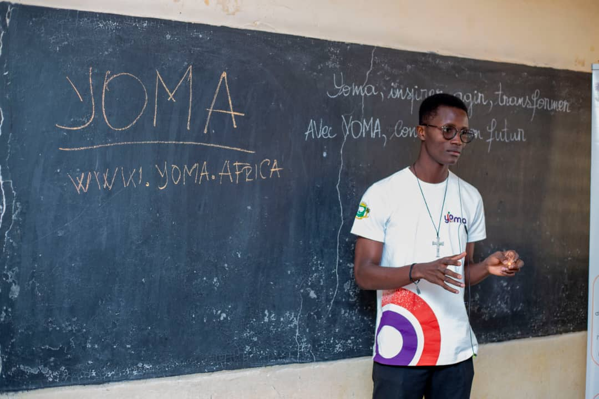
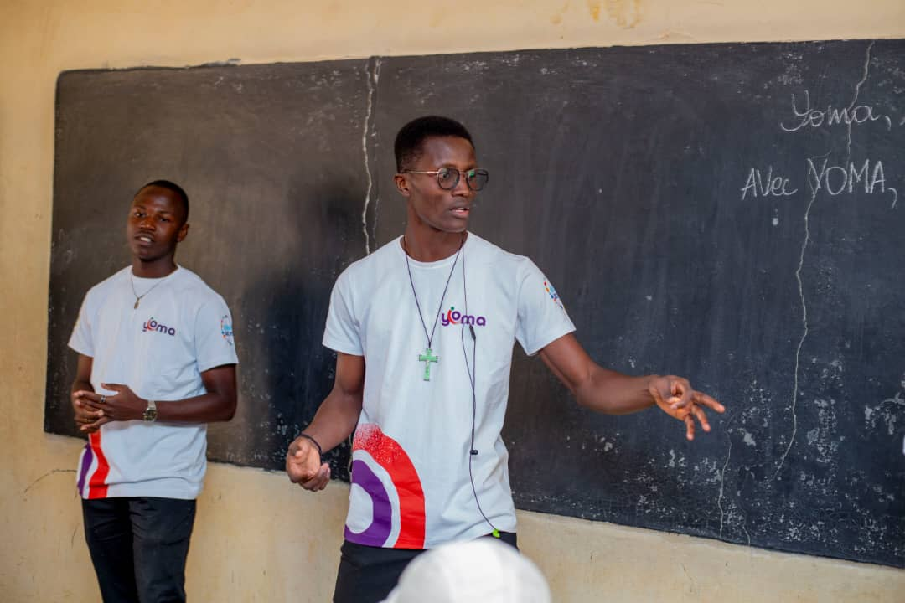
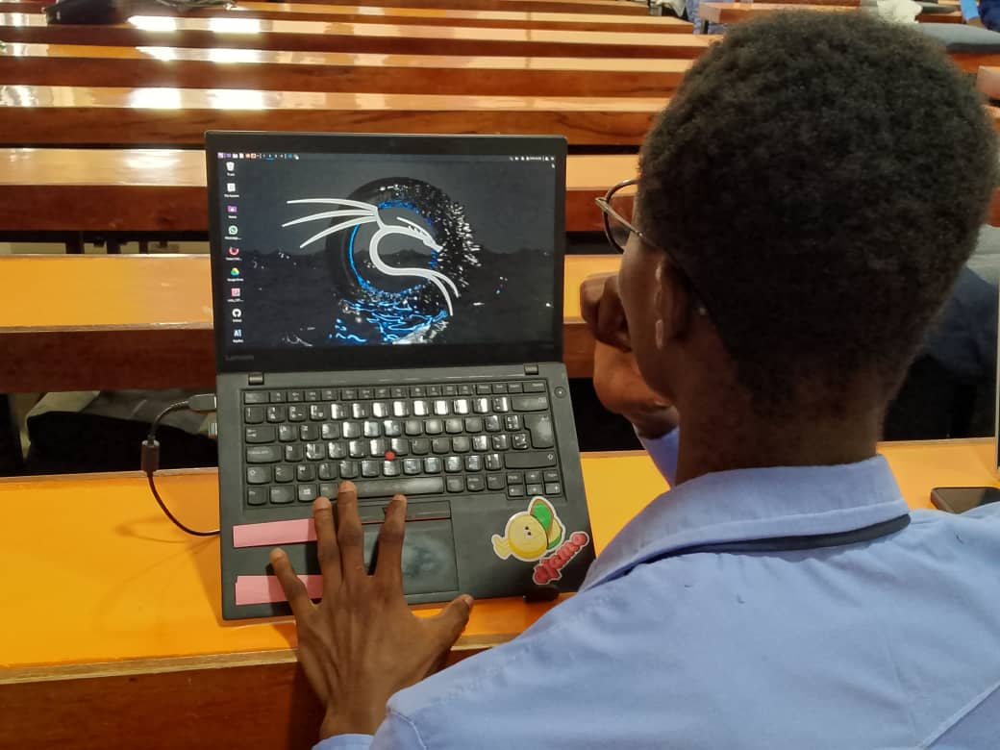
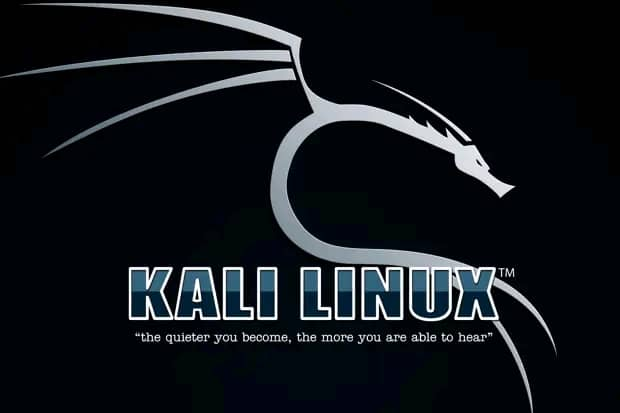

Je suis Cayeniga Anthelme Zakaria Coulibaly, un jeune âgé de 22 ans et étudiant en Réseaux Informatiques et Télécommunications à l'Université de Technologies d'Abidjan avec pour Icon Iron Man.
Depuis tout petit, j'ai toujours eu une curiosité insatiable pour la technologie. Maintenant étudiant en Licence 1 en Réseaux Informatiques et Télécommunications, je ne me contente pas des cours, je suis autodidacte et j'explore continuellement. J'ai acquis des compétences en travaillant sur l'installation des systèmes d'exploitation et je suis bénévole dans différentes associations à but non lucratif, où j'aide à installer et maintenir des systèmes informatiques, assister dans les tâches techniques et faire la promotion des plateformes. Mes échecs, comme la mise en place d'un réseau sécurisé et d'un chatbot, m'ont appris à mieux comprendre et anticiper les besoins. Chaque expérience m'a aidé à grandir. Grâce à des plateformes comme YOMA et NETACADEMY, j'ai enrichi mes compétences. Ma passion pour les NTIC continue de croître et je rêve de rendre la technologie accessible à tous pour un monde meilleur.
Ma passion pour les réseaux informatiques et les télécommunications m'a conduit à explorer divers domaines technologiques :
Ces domaines offrent des possibilités infinies pour innover et créer des solutions adaptées aux défis actuels. Mon objectif est de contribuer à rendre la technologie plus accessible et sécurisée.
 